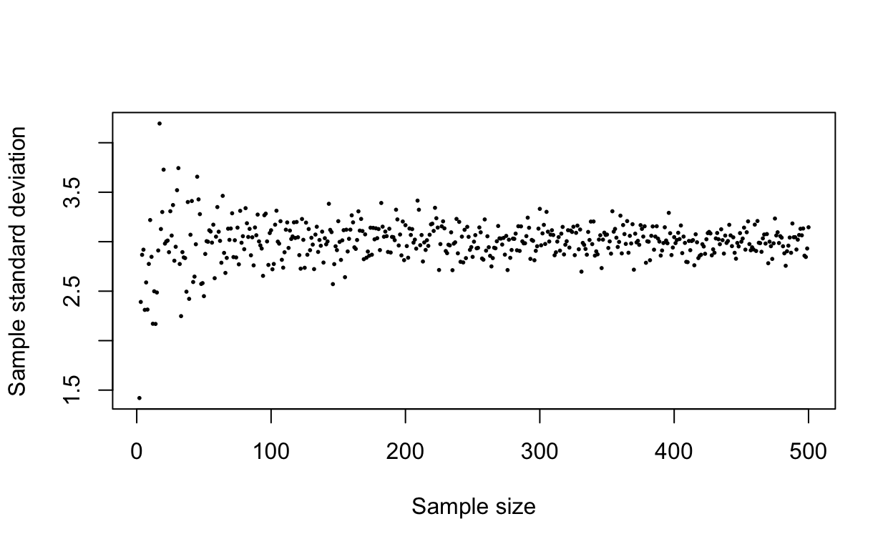

Standard errors introduced
In the tutorial on sampling distributions we saw that if we were to sample repeatedly from any population and calculate a mean for each sample, then as our number of samples got larger the sampling distribution of means would follow a normal distribution more and more closely. The mean of the sampling distribution will tend towards the population mean and the amount of spread in the sampling distribution will be determined by the standard deviation of the population and by size of the samples that we’re calculating our means from. Knowing this can give you an indication of how representative of the population mean a single sample mean is: large sample sizes and small population standard deviations will, in general, give sample means that better reflect the population mean. That’s all a bit vague, and it is often important to be more precise about how much uncertainty there is around an estimate. In this tutorial we’ll look at one way of doing this via a measure caled the standard error.
Since the sampling distribution is going to approximate to a normal distribution, we can ask what the standard deviation of the sampling distribution itself should be. Surprisingly, it is very simple to calculate an estimate for this value if we only have a single sample: the standard deviation of the sampling distribution of means can be estimated as:
\[ Standard \: error =\frac{s}{\sqrt{n}}\] where \(n\) is the sample size and \(s\) is the sample standard deviation. This is called the standard error of the mean, or more usually just the standard error, often abbreviated to SE. Just to clear up any confusion, this means that you can easily calculate an estimate of how much spread there would be in the sampling distribution of means from a single sample: take your sample, calculate the standard deviation and divide by the square root of the sample size.
Standard errors versus standard deviations
People often get confused between these two statistics and it’s important to be clear about what they are telling you:
The sample standard deviation is an estimate of the population standard deviation, and it tells you how much dispersion there is in the data around the mean.
The standard error is, fundamentally, a measure of the uncertainty associated with a sample mean: it gives you a measure of how accurate an estimate of the population mean it is likely to be.
When you calculate a standard deviation, it tells you how much spread there is in your data. When you take a sample from a population, the standard deviation you calculate is an estimate of the true value of the population standard deviation — the population you’re sampling from has a certain degree of dispersion in the data, and you are estimating that by calculating a sample standard deviation. As with your estimate of the mean, as you increase the sample size your estimate of the standard deviation should get more accurate. We can illustrate this by using R to sample repeatedly from a population with known standard deviation as follows. We’re using something called a for loop to do this repetitive task: if you haven’t met these before there’s a video explaining them here .
set.seed(3)
# Set up a vector of sample sizes from 2 to 500
sample.sizes <- 2:500
sd.estimates <- numeric(length = 499)
# Using a for... loop, use rnorm to sample from
# a normal distribution with mean 5 and sd 3, one with each
# sample size, and calculate the standard deviation of each one
for (i in 1:499) {
sd.estimates[i] <-
sd(rnorm(n = sample.sizes[i], mean = 5, sd = 3))
}
# Plot the standard deviations against sample size
plot(sd.estimates ~ sample.sizes,
pch = 16,
cex = 0.4,
xlab = "Sample size",
ylab = "Sample standard deviation"
)
Here, we’ve sampled repeatedly from a population with a standard deviation of 3. You can see that the amount of spread in our estimated standard deviation decreases as the sample size gets bigger, or in other words our estimates of the population standard deviation become more accurate. There are lots of estimates which are quite a long way from the true value of 3 when the sample size is less than about 100, but when it’s greater than about 250 you can see that all of the estimates are nicely close to the population value of 3.
What happens to the standard error as the sample size increases? See if you can edit this code to plot the standard error against sample size instead of the standard deviation.
set.seed(3)
# Set up a vector of sample sizes from 2 to 1000
sample.sizes <- 2:500
sd.estimates <- numeric(length = 499)
# Using a for... loop, use rnorm to sample from
# a normal distribution with mean 5 and sd 3, one with each
# sample size, and calculate the standard deviation of each one
for (i in 1:499) {
sd.estimates[i] <-
sd(rnorm(n = sample.sizes[i], mean = 5, sd = 3))
}
# Plot the standard deviations against sample size
plot(sd.estimates ~ sample.sizes,
pch = 16,
cex = 0.4,
xlab = "Sample size",
ylab = "Sample standard deviation"
)# You don't need to change the for loop code at all.
# You have a vector of standard deviations and a
# vector of sample sizes, so you need to create a
# new vector after the for loop which is simply the
# vector of standard deviations divided by the vector
# of sample sizes. Then swap out the name of your
# new vector for the sd.estimates vector name in
# the plot command, and change the y-axis title.
#
# The sqrt() function will calculate the square roots
# for you# This is the code you need to add to calculate the standard errors
se.vector <- sd.estimates / sqrt(sample.sizes)# Make sure all the arguments are
# separated by commas and that all
# the brackets match# Don't forget that you have to change the plot code so
# that your new vector of standard errors is the one
# plotted against sample size# Don't forget that you have to change the plot code so
# that your new vector of standard errors is the one
# plotted against sample size
# This is the code for the plot
plot(se.vector ~ sample.sizes,
pch = 16,
cex = 0.4,
xlab = "Sample size",
ylab = "Standard error"
)# This is the solution
set.seed(3)
# Set up a vector of sample sizes from 2 to 1000
sample.sizes <- 2:500
sd.estimates <- numeric(length = 499)
# Using a for... loop, use rnorm to sample from
# a normal distribution with mean 5 and sd 3, one with each
# sample size, and calculate the standard deviation of each one
for (i in sample.sizes) {
sd.estimates[i - 1] <-
sd(rnorm(n = sample.sizes[i - 1], mean = 5, sd = 3))
}
se.vector <- sd.estimates / sqrt(sample.sizes)
# Plot the standard deviations against sample size
plot(se.vector ~ sample.sizes,
pch = 16,
cex = 0.4,
xlab = "Sample size",
ylab = "Standard error"
)The pattern here is completely different from the one for the standard deviation. As the sample size increases so the standard error gets smaller, albeit with a declining slope. If you had a very large sample size it would be close to zero. This demonstrates what is special about the standard error: it is an estimate of how accurate your estimate of the mean is likely to be. With a small sample size and a large standard deviation, you will have a large SE and this will indicate to you that you should have little confidence that your estimate of the population mean is close to the real value. Conversely, with a large sample size and a small standard deviation you will have a very small standard error and this will indicate that your sample mean is likely to be close to the true value of the population mean.
You will often see mean values quoted as plus or minus one standard error, or graphs with error bars showing the standard error. It’s important to remember that these are not indicating the degree of dispersion in the data, rather they are showing the accuracy of the estimate of the mean. It’s arguable that the standard error is an inferior measure of the accuracy of an estimate, however, and that what we should really use is the 95% confidence interval which is calculated from the standard error. This is what we’ll look at next.

This work is licensed under a Creative Commons Attribution-NonCommercial 4.0 International License.